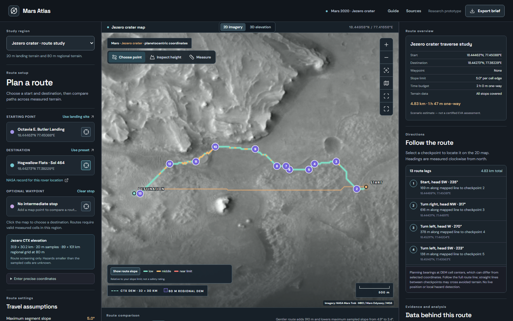
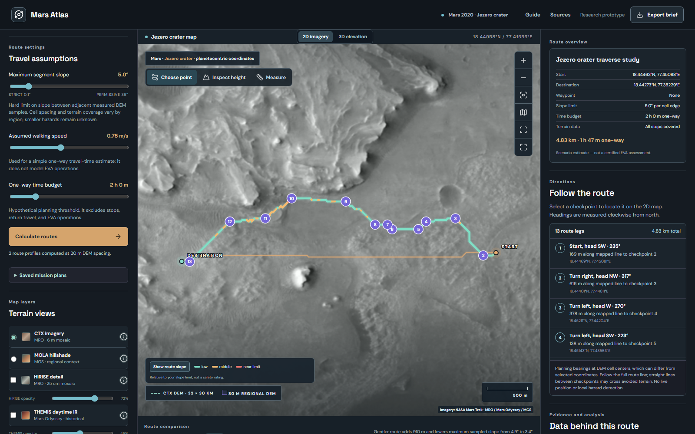
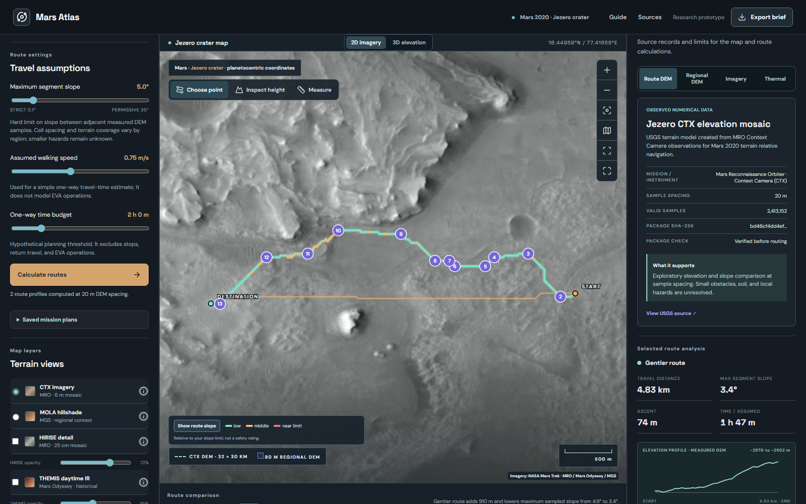
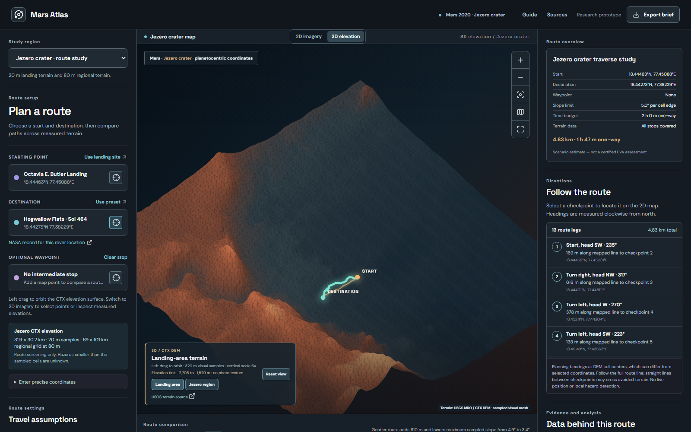
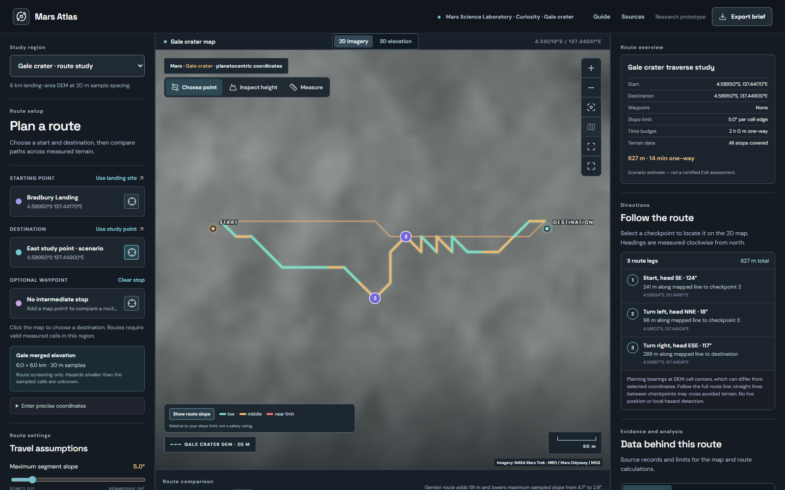
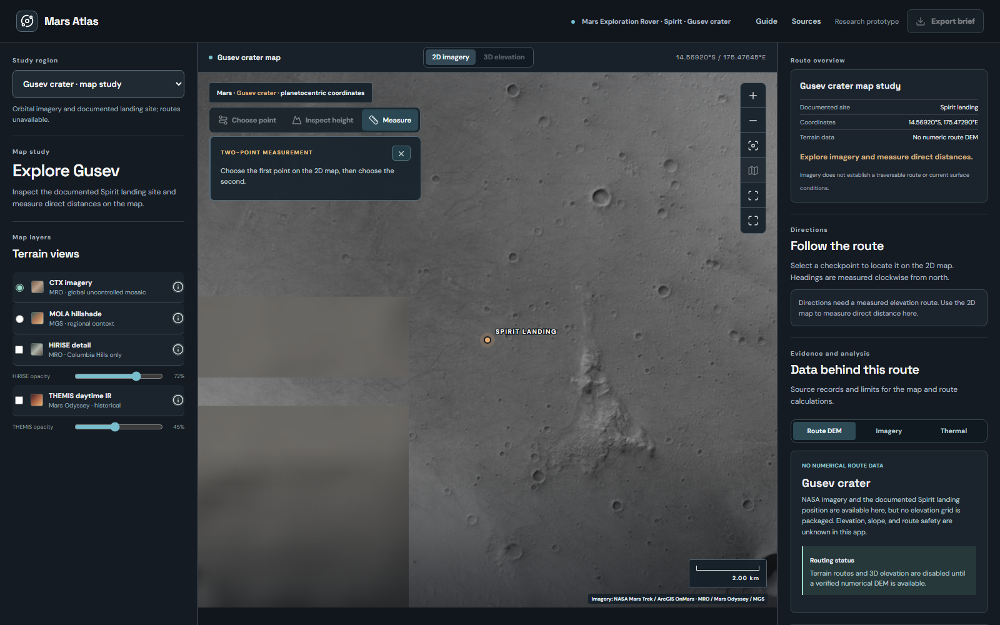

01 / ORIENT
Start in the workspace
- Study region: choose Jezero, Gale, or Gusev. Jezero and Gale have numerical route data; Gusev is an imagery study.
- Starting point: use a cited landing position or select a new point on the 2D map.
- Destination: use the cited Jezero rover position, the labelled Gale scenario point, or pick another map point.
- Map tools: choose a route point, inspect a measured height, or measure a straight line between two positions.
- View switch: change between orbital imagery and sampled 3D elevation when a DEM is available.
- Directions: route checkpoints list north referenced headings, turn direction, and segment distance.

02 / MODEL
Set your assumptions
- Slope limit: the maximum allowed angle between adjacent DEM samples. This is a model input, not an EVA standard.
- Speed: assumed travel speed for a one way estimate.
- Time budget: one way threshold, excluding stops and return travel.
- Calculate: recompute route alternatives after any point or setting changes. Browser saved plans are available below.
- Layers: switch CTX/MOLA background and optional HiRISE or historical THEMIS imagery; use opacity controls to compare visible detail.

03 / VERIFY
Inspect the evidence
- Source tabs: switch between route DEM, regional DEM, orbital imagery, and thermal imagery records.
- Source card: check the producing mission, sample spacing, valid cells, package checksum, limitations, and original public product link.
- Route analysis: compare distance, maximum sampled slope, ascent, time, and measured elevation profile. These are app calculations.
Evidence and analysis remain open in the right panel. Scroll that panel independently to read further source records and documented sites.

04 / EXPLORE
Rotate measured terrain
- Choose 3D elevation where a verified numerical grid is packaged.
- Left drag to orbit. Hovering alone never moves the model; use the wheel to zoom.
- Switch between the Jezero landing area and broader region, reset the camera, and open the USGS source. The 3D mesh is sampled and vertically exaggerated by 6× for visibility.

05 / GALE
Compare a second region
- Select Gale crater; its 6 km landing window contains 20 m samples from a USGS merged DEM.
- The east destination is explicitly a scenario point, not a NASA science site.
- Check headings and source limitations. The merged DEM includes MRO, ESA Mars Express HRSC, and MOLA gap inputs; underlying detail varies.

06 / GUSEV
Respect the coverage boundary
- Select Gusev crater to inspect a documented Spirit landing position and NASA orbital imagery.
- Use Measure for a direct two point distance. This is not a traversable route.
- The evidence panel states that no numerical route DEM is packaged here; height, slope, 3D terrain, and route planning remain unavailable.
Before sharing a result
Use Export brief in Jezero or Gale to save the current model settings, computed route metrics, data identifiers, source URLs, and limitations. Cite the exact DEM and imagery products from the complete resource register. A model path is not a rover command or field safety clearance.